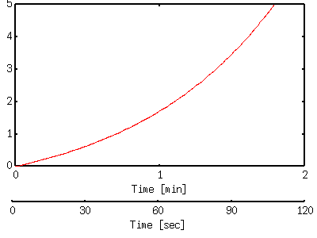
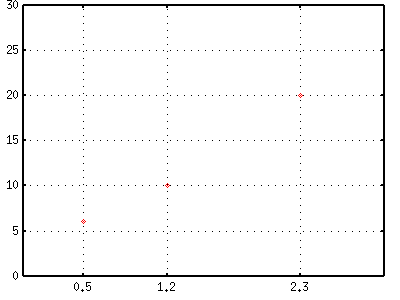
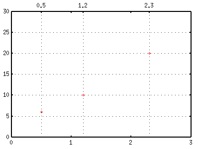

<!DOCTYPE HTML PUBLIC "-//W3C//DTD HTML 4.01 Transitional//EN">
<html lang="ja">
<head>
<title> gnuplot / plot (4) </title>
<!-- Generated 2000/ 2/16, Last modified 2002/ 4/10 -->
<!-- $Id: plot4.html,v 1.12 2004/12/19 09:23:44 kawano Exp $ -->
<meta http-equiv="content-type" content="text/html;charset=iso-2022-jp">
<link rel="stylesheet" href="style-new.css" type="text/css">
</head>
<body>

<table width="100%" border="0" cellpadding="0" cellspacing="0">
<tr><td bgcolor="#cccc90" width="320">
    <div align="left">
    <a href="index.html">
    
    </a></div></td>
    <td bgcolor="#cccc90">
      <div align="center"><h3> - not so Frequently Asked Questions - </h3> </div>
      <div class="update"> update 2004/9/5 </div>
    </td>
</tr>
<tr><td bgcolor="#fae8ba"></td>
    <td bgcolor="#fae8ba"><div class="navi"> 
<a href="index.html">           HOME </a> |
<a href="intro/index.html">     INTRODUCTION </a> |
<a href="general.html">         INFORMATION </a> |
<a href="gallery/index.html">   GALLERY </a> |
<a href="plot4-e.html">         ENGLISH </a>
</div></td></tr>
</table>
<hr class="topsep">


<table width="100%" border="0" cellpadding="0" cellspacing="0">
<tr><td id="menu">
 <p> not so FAQ</p>
  <ul>
    <li><a href="legend.html">      $BK^Nc(B(Legend) </a>
    <li><a href="tics.html">        $BL\@9(B(Tics) </a>
    <li><a href="label.html">       $B%i%Y%k(B(Label) </a>
    <li><a href="plot1.html">       2$B<!85%W%m%C%H(B </a>
    <ul>
      <li><a href="plot1.html#5.1">
           $B0lDj$NBg$-$5(B </a>
      <li><a href="plot1.html#5.2">
           $B:81&N>J}$N(BY$B<4(B </a>
      <li><a href="plot1.html#5.3">
           $B<4$r>C$9(B </a>
      <li><a href="plot1.html#5.4">
           $B=D2#Hf$N8GDj$5$l$??^(B </a>
      <li><a href="plot2.html#5.5">
           $B%<%m<4(B </a>
      <li><a href="plot2.html#5.6">
           $B8m:9K@$N2#@~(B </a>
      <li><a href="plot2.html#5.7">
           $BJ8;z$rBg$-$/(B</a>
      <li><a href="plot2.html#5.8">
           $B6J@~$GJd4V(B</a>
      <li><a href="plot2.html#5.9">
           $BOH@~>e%G!<%?E@$r>C$9(B </a>
      <li><a href="plot3.html#5.10">
           $BJ#?t$N%0%i%U(B </a>
      <li><a href="plot3.html#5.11">
           $B3J;R(B </a>
      <li><a href="plot4.html#5.12">
           $BJ#?t$N<4(B </a>
      <li><a href="plot4.html#5.13">
           $BG$0U$N3J;R(B </a>
      <li><a href="plot5.html#5.14">
           $B?^Cf$N?^(B </a>
      <li><a href="plot5.html#5.15">
           $BK@%0%i%U(B </a>
      <li><a href="plot6.html#5.16">
           2$B$D$N?^$rJB$Y$k!%(B</a>
      <li><a href="plot7.html#5.17">
           $B@55,3NN(<4(B </a>
      <li><a href="plot7.html#5.18">
           $B%G!<%?CM$r0u:~(B </a>
    </ul>
    <li><a href="plot3d.html">      3$B<!85%W%m%C%H(B </a>
    <li><a href="polar.html">       $B6K:BI8%W%m%C%H(B </a>
    <li><a href="parametric.html">  $BG^2pJQ?tI=<((B </a>
    <li><a href="datafile.html">    $B%G!<%?%U%!%$%k$N?tCM(B </a>
    <li><a href="postproc.html">    $B?^$rIA$$$?$=$N8e$O(B</a>
    <li><a href="misc1.html">       $B$=$NB>(B </a>
  </ul>
<br>
</td>


<td id="content">


<h1><a name="top"> 2$B<!85%W%m%C%H$N$"$l$3$l(B ($B$=$N(B4) </a></h1>

<div align="center">
<a href="plot1.html"> 1 </a> | 
<a href="plot2.html"> 2 </a> | 
<a href="plot3.html"> 3 </a> | 
<a href="plot4.html"> 4 </a> | 
<a href="plot5.html"> 5 </a> | 
<a href="plot6.html"> 6 </a> | 
<a href="plot7.html"> 7 </a>
</div>


<h2><a name="5.12">$B%9%1!<%k$N0c$&J#?t$N<4$rIA$-$?$$!%(B</a></h2>

<p> $B0l$D$N%0%i%U$K!$L\@9$,0c$&(B2$B$D0J>e$N<4$rIU$1$?$$>l9g$,$"$j$^$9!%Nc(B
$B$($P!$2#<4$,29EY$N%0%i%U$G@];a$H@dBP29EY(B(K)$B$rF1;~$KL\@9$k>l9g$d!$7P;~(B
$BJQ2=$NL\@9$KJ,$HIC$rF1;~$K=q$/>l9g$J$I$G$9!%$3$l$r$9$k$K$O!$4v$D$+$NJ}(B
$BK!$,9M$($i$l$^$9!%Nc$($P!$(B<a href="plot3.html#5.10">multiplot</a>$B$r;H$C(B
$B$F(B2$B$D$N%0%i%U$r=E$M$k$H$+!$(B<a href="plot1.html#5.2">$BH?BPB&$N<4$r;H$&(B
</a>$B$J$I$G$9!%(Bmultiplot$B$r;H$&$H!$0J2<$N$h$&$J$3$H$b$G$-$^$9!%(B</p>

<p> X$B<4$r(B2$B$D:n$kJ}K!$rNc$K$7$^$9!%$^$:=DJ}8~$r>/$7=L>.$7!$(Bbottom$B$N(B
$B%^!<%8%s$r(B0$B$K$7$F!$(Bmultiplot$B$N%b!<%I$KF~$j$^$9!%(B</p>

<pre class="sample">
gnuplot&gt; set size 1.0,0.7
gnuplot&gt; set bmargin 0
gnuplot&gt; set yrange [0:5]
gnuplot&gt; set multiplot
</pre>

<p> $B?^$r>/$7>e$K0\F0$7$?8e!$:G=i$N%0%i%U$rIA$-$^$9!%2<$NNc$G$O!$(B
y=exp(x)-1 $B$H$$$&4X?t$r%W%m%C%H$7$F$$$^$9!%(BX$B<4$O!VJ,!W$NC10L$r(B
$B;}$D$H$7$^$9!%(B</p>

<pre class="sample">
multiplot&gt; set origin 0,0.3
multiplot&gt; set xrange [0:2]
multiplot&gt; set xtics 1
multiplot&gt; set xlabel "Time [min]"
multiplot&gt; plot exp(x)-1 notitle
</pre>

<p> $B<!$K?^$r>/$72<$2$F!$JL$NL\@9$G(B<a href="plot1.html#5.3">X$B<4$@$1$rIA(B
$B$-$^$9!%(B</a> $B>e$N%0%i%U$H=E$J$i$J$$$h$&$K!$(B<tt> set noytics </tt>, 
<tt> set xtics nomirror </tt> $BEy$r;XDj$7$F$*$-$^$9!%:G8e$K!$OH$@$1$r(B
$BIA$/$?$a$K!$%0%i%U$+$i$O$_=P$7$F$7$^$&$h$&$JE,Ev$J4X?t$r%W%m%C%H$7$^$9!%(B
$B$3$3$G$O(By=-1$B$H$7$^$7$?!%(B</p>


<pre class="sample">
multiplot&gt; set origin 0,0.15
multiplot&gt; set xrange [0:120] 
multiplot&gt; set xtics nomirror 30 
multiplot&gt; set noytics
multiplot&gt; set xlabel "Time [sec]"
multiplot&gt; set border 1
multiplot&gt; plot -1 notitle
multiplot&gt; set nomultiplot
gnuplot&gt; 
</pre>


<p> $B$"$^$j%9%^!<%H$JJ}K!$H$O8@$($^$;$s$,!$<BMQ>eLdBj$J$$$G$7$g$&!%(B2$B$D(B
$B$N(BX$B<4$N4V3V$J$I$bHyD4@0$7$h$&$H$9$k$H!$?'!9$HLLE]$G$9!%<B:]$K$b$C$He:(B
$BNo$J?^$K$7$?$$$J$i!$IaDL$K%W%m%C%H$7$F$*$$$F!$(BTgif$B$GJL$N<4$rIA$-2C$($k(B
$BJ}$,NI$$$G$7$g$&!%(B</p>


<div class="top"><a href="plot4.html#top"></a></div>
<h2><a name="5.13">$BG$0U$N2U=j$K3J;R(B(grid)$B$rIA$-$?$$!%(B</a></h2>

<p> <tt> set grid </tt>$B$GIA$+$l$k%0%j%C%I(B($B3J;R(B)$B$OBgL\@9(B(tics)$B$N$"(B
$B$k=j$KIA$+$l$^$9$N$G!$IaDL$OEy4V3V$G$9!%$3$l$rG$0U$N2U=j$KIA$/$K$O!$(B
<a href="tics.html"><tt> set tics </tt> $B$r;H$C$F(B</a>$BBgL\@9$N0LCV$r(B
$BD4@0$7$^$9!%(B</p>

<p> $B<!$NNc$G$O(B<tt> set xtics </tt>$B$r;H$C$F!$(B0.5, 1.2, 2.5 $B$N(B3$B2U=j$K(B
tics$B$rIU$1!$$=$3$K%0%j%C%I$rIA$$$F$$$^$9!%(B</p>

<pre class="sample">
gnuplot&gt; set xtics ("0.5" 0.5, "1.2" 1.2, "2.3" 2.3)
gnuplot&gt; set grid
</pre>

<div align="center"></div>

<p> X$B<4$G$OL\@9$rEy4V3V$rJ]$C$?$^$^$G!$%0%j%C%I$N0LCV$rJQ$($k$K$O!$(B
X2$B<4(B($B>e$N<4(B)$B$r;H$$$^$9!%(B<tt> set x2tics </tt>$B$r;H$C$F%0%j%C%I$r(B
$BF~$l$k0LCV$r7h$a!$(B<tt> set grid </tt> $B$N%*%W%7%g%s$G(BX2$B<4$@$1$K(B
$B%0%j%C%I$rIA$/$h$&$K;XDj$7$^$9!%(B</p>

<pre class="sample">
gnuplot&gt; set xtics 0,1
gnuplot&gt; set x2tics ("0.5" 0.5, "1.2" 1.2, "2.3" 2.3)
gnuplot&gt; set grid noxtics x2tics
</pre>

<div align="center"></div>

<p> $B%0%i%U$N>e$KIA$+$l$k?t;z$,HQ$o$7$$$J$i!$(B<tt> set xtics "" 0.5 </tt>
$B$NMM$KJ8;zNs$r6uGr$K$7$F$*$-$^$9!%C"$7!$?t;z$OIA$+$l$^$;$s$,!$(BX2$B<4(B
$B$NBgL\@9$O;D$C$F$7$^$$$^$9!%(B</p>


<div class="top"><a href="plot4.html#top"></a></div>
</td></tr></table>
<hr class="topsep">


</body>
</html>

